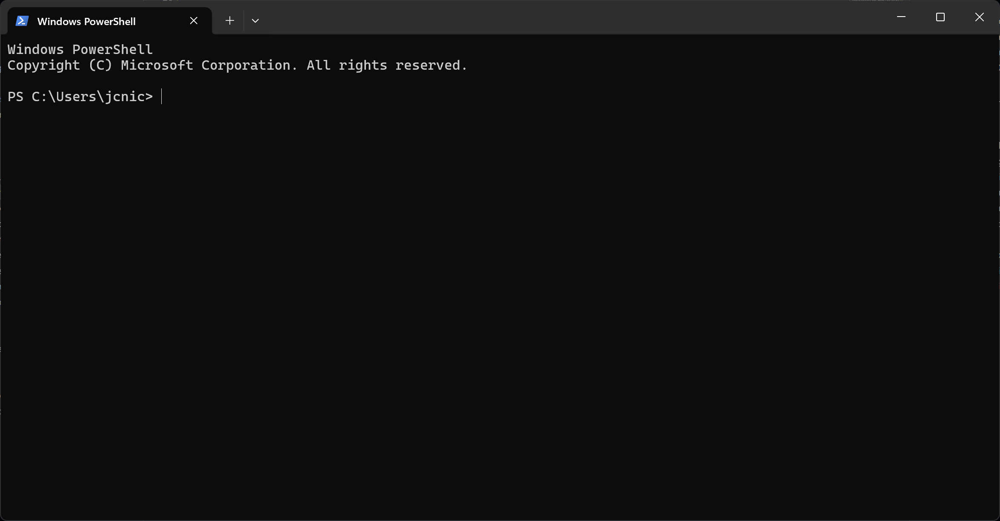
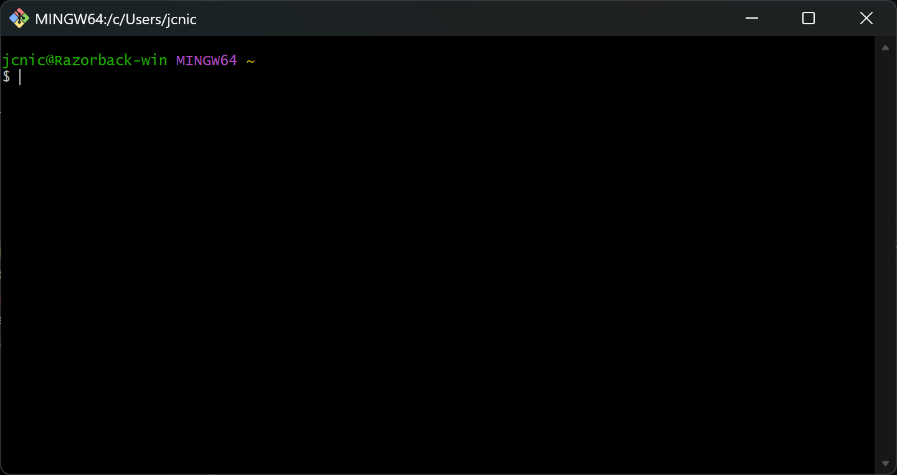
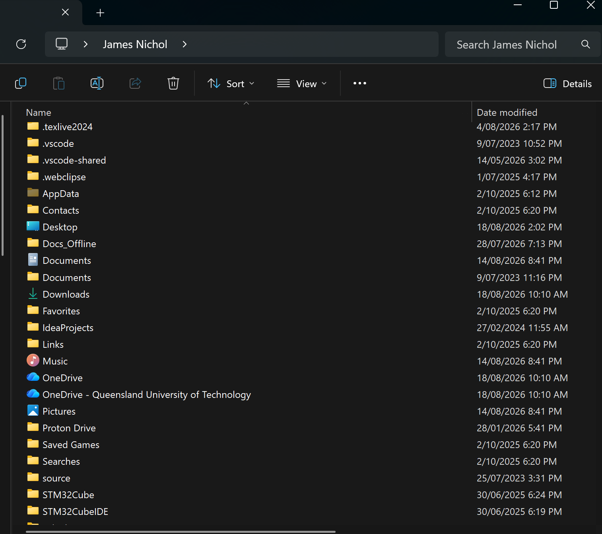

Command Line Basics¶
This lesson will take you through the basics of navigating and using the terminal and command line, preparing you to use version control systems and other advanced tooling later in the semester. These skills are fundamental to navigating and interacting with modern software projects.
What is it?¶
A command line interface (or CLI) is a text-based interface which allows you to directly interact with your computer instead of using graphical windows. It's a core part of almost all software development, since:
- Many tools operate primarily through the command line (
git,cmake,gcc, ...) - All scripts (which includes most automation) run in the terminal
- It's faster than a GUI for a lot of operations!
Terminology
The terms terminal, shell, and CLI are often used interchangeably to refer to "the thing you enter text comands into".
However, they technically do refer to different things.
The CLI is the actual interface you interact with - it's the line on which you enter your commands!
The shell is the text-based program which provides the CLI and parses, executes, and displays commands and information.
Examples include Command Prompt (cmd.exe), PowerShell, Bash, sh, zsh, and more.
Finally, the terminal is the graphical display in which the shell runs - and sometimes they're the same program, just to make things more confusing!
| Operating System | Default Shell |
|---|---|
| Windows | PowerShell (or sometimes Commmand Prompt) |
| Linux | Usually Bash, sometimes zsh |
| MacOS | Z shell (zsh) |
How do we run it?¶
Windows¶
Start Menu (recommended)¶
Open the start menu by pressing Win and type "Terminal" - it comes preinstalled on modern Windows versions and will open PowerShell. If that doesn't work, you can also search for "PowerShell", "Command Prompt", or "cmd.exe" to launch a shell directly.
Warning
We recommend using PowerShell instead of Command Prompt, as it is a much better shell and behaves better.
Run Menu¶
Alternatively, you can launch the exact executables directly.
- Press Win+R to open the Run menu
- Type either
powershell.exeorcmd.exeand press Enter. - PowerShell or Command Prompt should now launch!
MacOS¶
Applications¶
Go to your Applications folder and run the Terminal app.
Launcher¶
Press Cmd+Space, type terminal.app, and press enter.
Linux¶
Launching a terminal may vary between distros, but usually pressing Ctrl+Alt+T will bring one up. Alternatively, on most "standard" distros you can usually press Super to bring up a search menu. In this case, just search "terminal" - some of the most common options you're likely to see include Konsole, GNOME Terminal, LXTerminal (on Raspberry Pis), Alacritty, or kitty. If Super doesn't bring up a search menu, try Super+Space or Super+R - if none of these work, I assume that you have enough knowledge of your particular distro to launch a terminal anyway.
What's all this?¶
Now that you should have a basic terminal open, let's go over how to use it. Where your cursor is blinking is called the prompt - it's where your typed commands live. To its left or above it will be your current working directory (CWD), which is the directory the shell currently has "selected". This is equivalent to navigating to that directory in your file explorer of choice: If you create things, run programs, or rename/move items, it is all relative to that directory, just like in a graphical browser.

For example, in the PowerShell screenshot shown above, the CWD is C:\Users\jcnic.
All terminals will open to your "home directory" by default, which varies by OS.
In Windows, this will almost always be shown as its full path, but in Linux and Unix-like systems like MacOS, it is usually abbreviated to ~ instead1.
| OS | Shorthand | Example Full Path | Display Path |
|---|---|---|---|
| Windows | %userprofile% |
C:\Users\jcnic |
C:\Users\jcnic |
| MacOS | ~ |
/Users/james |
~ |
| Linux | ~ |
/home/james |
~ |
On Linux, you might see something more similar to this:

Here, in addition to the current directory (~), the prompt also includes login details - that being your username and machine hostname.
However, they are all equivalent to opening that directory in Explorer like so:

Home Directories
On all operating systems, your home directory is the folder that contains the locations you probably normally interact with, such as Documents, Desktop, Downloads, Photos, and so on. You can see some of them in the screenshot above!
Basic Navigation¶
Changing Directory¶
Note
This lesson uses forward-slash path notation: folder1/folder2, as this is what Linux and MacOS use.
However, Windows uses backslash notation: folder1\folder2.
This is incompatible with Linux-style shells, whereas forward-slash is compatible with Windows.
The first part of using the terminal is basic navigation.
In all shells, this is done using the cd command (short for change directory).
After typing out your command, press Enter to execute it.
For example, if the current directory contains a directory named Projects, you can navigate to it like so:
And you can go straight to subdirectories too:
To go back up a directory level, use .., which means "the folder above this one".
For example, if you were in the Projects/robots101 subdirectory, this would go back up one level to Projects:
Or, again being executed from Projects/robots101, you can chain it together like any other folder name:
# Go back up two directory levels (to the original path)
cd ../..
# Or to a sibling directory:
cd ../robots102
However, this command will fail if the folder you're trying to navigate to contains spaces or special characters:
To navigate into these directories, you must surround the path with single (or double) quotes:
All the directories so far have been relative to your current location. You can also use absolute paths, which are relative to the file system root:
Linux-style:
Windows:
Showing Current Location and Contents¶
Although most shells show your current path in the prompt, sometimes you just want to know your current location, such as to expand abbreviations like ~, for use in scripting, or if the terminal just doesn't show it.
This is the job of the pwd command (short for print working directory):
And to list out the contents of your current directory:
Warning
ls is the default directory listing program on Linux and MacOS, but not Windows.
In PowerShell ls will work (somewhat), but not in Command Prompt.
On Windows, the dir command is the closest alternative:
dir anywhere you see ls if you are using Command Prompt.
Additionally, if you want to list the contents of a specific directory instead of your current one, you can do that too:
And of course it works with both relative and absolute paths too.
Making and Moving Things¶
To make a directory from the CLI, you use the mkdir command (make directory):
This will create a folder in your CWD, just like creating a new folder from your file explorer. However, it can't create parent directories:
Note
Windows does automatically create parent folders by default using mkdir!
For that, you need to add the -p flag (meaning create parent directories):
Once you've created things, you might also want to move things!
This is done using the mv command (move):
And this works for both files and directories, though it is worth noting that you can't move things to nonexistent directories.
Removing Things¶
Danger
Deleting things from the command line has no undo! Make sure you know what you're doing, as you can easily break things. Your OS will probably try to put some guard rails in place, but if you ignore them, you can do serious damage.
Linux/MacOS¶
On Linux and MacOS, your primary way of deleting things is the rm (remove) command:
However, this doesn't work on directories!
For that, you need to add the -r (recursive) flag:
-
The one normal exception to this is Git Bash on Windows - it will show your home directory as
~to keep consistency with Linux shells. ↩